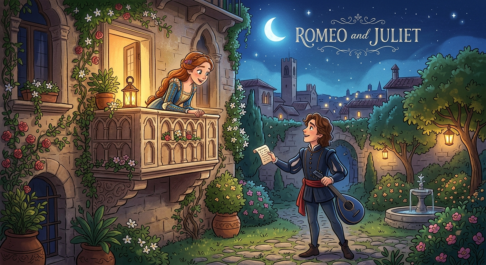
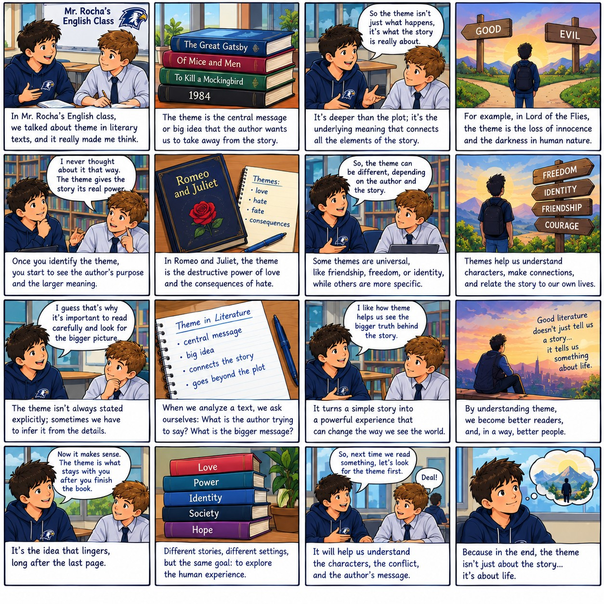
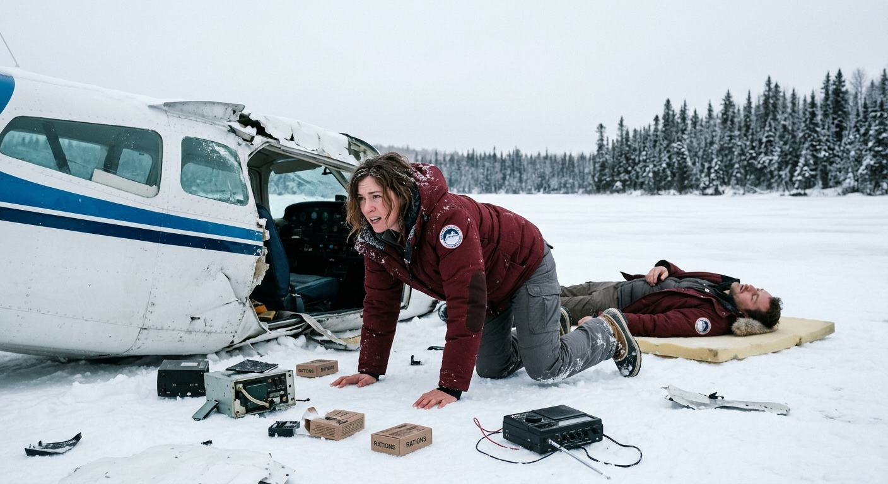

Introduction

Welcome to our module on Theme in Literature. Throughout these activities, you will analyze, unscramble, and evaluate texts to deepen your understanding of central messages in storytelling.
Activity 1: Video Analysis
Watch the video. Take notes and tell Mr. Rocha what the video was about.
Activity 2: Scrambled Image
Reorder the 20 parts of the image to form the complete picture. Drag and drop to swap pieces.
Target Image (80% size):

Activity 3: Dialogue on Theme
Select Person B's correct response from the dropdowns to complete the C1-level conversation about literary themes. Used options will be removed from other dropdowns.
Activity 4: Story Interpretation

Activity 5: Reading Comprehension
The Architectural Framework of Theme
In literary analysis, the concept of 'theme' extends far beyond a simplistic moral or a reductive summary of events. Rather, theme functions as the intricate skeletal structure of a narrative—an underlying philosophical assertion that governs character development, orchestrates plot progression, and unifies disparate motifs into a cohesive thematic tapestry. While novice readers frequently conflate subject matter with theme, a sophisticated examination reveals that the subject is merely the vehicle, whereas the theme is the philosophical destination.
Consider, for instance, a novel concerning a devastating war. The subject is undeniably warfare and its explicit brutalities. However, the theme might interrogate the corrosive nature of unchecked authority, the resilience of human camaraderie in the face of existential despair, or the profound psychological fragmentation experienced by combatants. A masterful author rarely states these themes explicitly. Instead, they are woven into the subtext, demanding active cognitive engagement from the reader to decode symbols, analyze character foils, and synthesize recurring ideological conflicts.
Furthermore, literary themes are inherently polyphonic, meaning a robust narrative rarely espouses a singular, monolithic viewpoint. Instead, it presents competing thematic propositions, allowing ambiguity to foster deeper intellectual discourse. The protagonist’s journey often serves as the primary conduit for thematic exploration, as their internal moral calculus and subsequent choices reflect the author’s broader inquiries into the human condition.
Consequently, identifying a theme requires an inductive analytical approach. The reader must accumulate textual evidence—ranging from syntactic nuances to overarching narrative arcs—and construct a generalized claim about reality or human nature that transcends the specific constraints of the fiction. Ultimately, the profound enduring power of canonical literature resides not merely in the elegance of its prose, but in its relentless pursuit of thematic truths that resonate across varied historical epochs and cultural paradigms.
Activity 6: Syntactic Reconstruction
Reconstruct the 12 C2-level complex and compound sentences by clicking the words in the correct order. Use the Speaker button to hear the correct sentence.
Activity 7: The Last Signal

Listen to the audio and fill in the missing words (every 20th word is omitted).